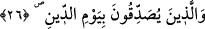
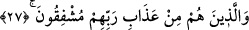
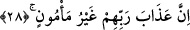

çocuk ve onların ihtiyaçlarıyla meşguliyet sebebiyle acziyet dünyasına atılmış ve oraya
düşmüş kişidir. Hakîkat ve mârifet ehli, bu tür insanları da tesellî etmeli, Cenâb-ı
Hakk’ın rahmeti ve mağfireti ile kalplerini hoş etmeli ve Allah Teâlâ’nın kereminden ve
feyzinden mahrum kalmamaları için şerefli nefeslerinin bereketinden üzerlerine
akıtmalıdır.
26. Cezâ (ve hesap) gününü tasdik edenler;
Yâni amelleriyle bu tasdiklerini ortaya koyanlar. Zira onlar âhiret sevabını
arzulayarak mâlî ve bedenî ibâdetlerde kendilerini yorarlar. Bu hareketlerinden onların
cezâ gününü tasdik ettikleri anlaşılır. Sâdece kalp ve lisân ile yapılan tasdik -her ne
kadar ebediyyen cehennemde kalmaktan kurtarsa da-, yukarıda zikredilen kötü sıfatları
tabîat hâline getirmiş kimselerden müstesnâ kılmaz.
Kâşânî bu âyet-i kerîmeyi şöyle tefsir eder: Burhânî yakîn veya îmânî îtikad ehlinden
âhiret ve meâdın hâllerini tasdik edenler. Onlar da orta yolu tutmuş olan kalp
erbâbıdır.
27. Rablerinin azâbından korkanlar,
Fazîletli amelleri olduğu hâlde onları eksik görerek ve Cenâb-ı Hakk’a tâzimde
bulunarak kendileri için korkanlar.
Kâşifî şöyle buyurur: “Allah’tan korkmanın alâmeti, günahlardan ve nehyedilen
şeylerden kaçınmaktır.”
Hasan Basrî (rh.) şöyle buyurur: “Mü’min, hasenelerinin kabul edilmemesinden
korkar.”
Âyetteki “min âzâbi rabbihim” kısmının öne alınmasının, Allah Teâlâ’nın “Yalnız
benden korkun!” [111] emrine imtisâlen hasr için olduğunu kabul etmek, gâyet güzel bir
tevcihtir. Bu takdîmin takviye/kuvvetlendirme için olması da câizdir.
28. Şüphesiz Rablerinin azâbı(na karşı) emin olunamaz;
Allah’ın onlara olan azâbı, kendisinden emin olamadıkları bir azaptır.